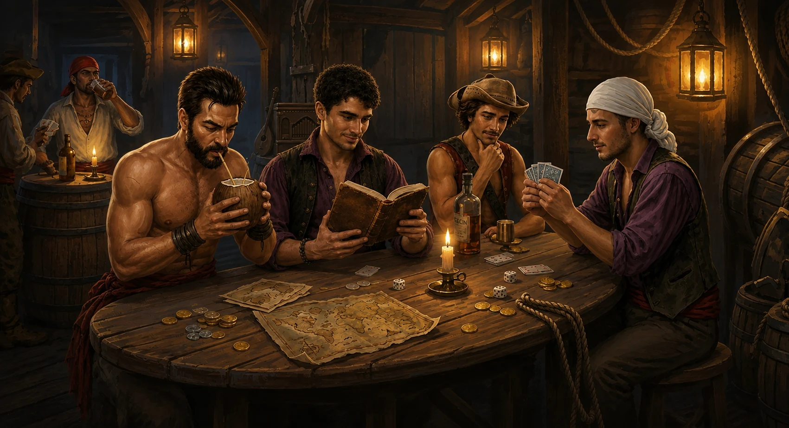

Connexion perdue — reconnexion en cours…

← Tous les jeuxDe 3 à 7 joueurs (jusqu'à 9 avec l'extension officielle) — 10 manches, annonces simultanées.
ou rejoindre avec un code
Code de la partie
Discussion
Réglages
Paquet de cartes
Nombre de manches
Rythme de la partie
Extension officielle
Ta pièce
Joueurs — 1 (3 à 7)
Pouvoir de Pirate
Annonces !
La Tigresse, tu la joues…
/
Ton choix est annoncé à toute la table dès que la carte est posée.
Le Joker prend quelle couleur ?
Cette carte, tu la poses…
/
La pastille choisie est frappée sur la carte : toute la table verra ce que tu as déclaré.
Qui passe par-dessus bord ?
Le Pirate jeté ne remporte plus le pli, ne vaut plus de bonus, et son pouvoir ne se déclenche pas.
Mon contrat
Gain si contrat rempli
Classement
| Joueur | Annonces | Plis | Total |
|---|